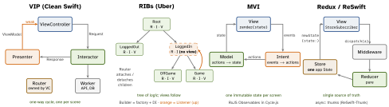

design · memo
In one line: Every iOS architecture answers three questions: who owns the state,
which way does data flow, and where do side effects live. VIP (Clean
Swift) makes each screen a one-way cycle of three objects; RIBs (Uber) drive the app
by a tree of business logic, not of views; MVI and Redux keep one
immutable state changed only by a reducer; TCA is Redux made composable; MV says
SwiftUI views plus @Observable models are already enough.
Download PDF Print view LaTeX source


| Pattern | State lives in | Data flow | Testability | Boilerplate | Fits |
|---|---|---|---|---|---|
| VIP | Interactor (+ DataStore) | VC→I→P→VC, one way | high: spy the next role | high: ∼7 types/scene | UIKit apps, per-scene rigour |
| RIBs | each RIB’s Interactor | tree; Rx down, listener up | high: I/R/B behind protocols | very high, codegen | huge apps, many teams, deep flows |
| MVI | one immutable screen State | Intent→reduce→render | high: pure reducer | medium | complex screens, Android parity |
| Redux / ReSwift | one global Store | dispatch→reducer→subscribers | high reducers; effects harder | medium–high | shared app-wide state |
| TCA | Store tree of features | unidirectional, composed | very high: TestStore | high | big SwiftUI teams (own sheet) |
| MV | @Observable models / services | view calls model, observes it | models yes, view logic no | low | SwiftUI small–mid apps |
How it works(unverified)
- VIP (Raymond Law’s Clean Swift; Clean Architecture per scene): VC (
DisplayLogic) sends a Request to the Interactor (BusinessLogic, uses Workers), which passes a Response to the Presenter (PresentationLogic), which formats a ViewModel and callsdisplay…on the VC. Router (RoutingLogic+DataPassing) navigates and hands data via the Interactor’sDataStore. Models are nested per use case:Scene.UseCase.Request/Response/ViewModel. - RIBs = Router · Interactor · Builder (+ optional Presenter, View). Interactor = business logic + Rx subscriptions bound to its active/inactive lifecycle; Router attaches/detaches child RIBs; Builder creates the unit and injects dependencies. A RIB may have no view. Up = a
Listenerprotocol the parent implements. - MVI: Intent = what the user wants (not an Android
Intent); a reducer makes the next immutable State; the view is a purerender(state). One-shot events (navigate, toast) need a separate channel. - Redux (JS, 2015): one store, read-only state, pure reducers. ReSwift:
Store<AppState>(reducer:state:),dispatch,StoreSubscriberwithnewState(state:);subscribe(self) { $0.select { $0.cart } }narrows updates. - MV: no per-screen ViewModel; logic lives in
@Observablemodels / services passed via.environment(model), read with@Environment(Model.self). Critics: business rules drift intobody.
Remember
Place any pattern with 3 questions: who owns state? which way does it flow? where do effects live? VIP = cycle · RIBs = logic tree · MVI/Redux = one state + reducer.
Example — one VIP use case
enum ListOrders { enum Fetch { // per use case
struct Request {}
struct Response { let orders: [Order] }
struct ViewModel { let rows: [String] } } }
protocol ListOrdersDisplayLogic: AnyObject {
func display(_ vm: ListOrders.Fetch.ViewModel) }
final class ListOrdersInteractor { // BusinessLogic
var presenter: ListOrdersPresenter?; let worker = OrdersWorker()
func fetch(_ r: ListOrders.Fetch.Request) {
worker.load { self.presenter?.present(.init(orders: $0)) } } }
final class ListOrdersPresenter { // PresentationLogic
weak var viewController: ListOrdersDisplayLogic? // no cycle
func present(_ r: ListOrders.Fetch.Response) {
viewController?.display(.init(rows: r.orders.map(\.title))) } }
// VC: interactor?.fetch(.init()) in viewDidLoadTraps
- “VIP is VIPER renamed.” VIPER’s Presenter sits between View and Interactor, two-way; VIP is a one-way cycle (VC talks to the Interactor directly), no Entity layer, typed Request/Response/ViewModel per use case.
- VIP ownership: VC → Interactor → Presenter strong; Presenter → VC weak, or the scene never deallocates.
- RIBs’ Router is not “just navigation” — it owns the RIB tree; screens are a side effect of attaching RIBs.
- Redux: every subscriber hears every change unless it
selects a slice; keep ephemeral UI state (focus, scroll) out of the global store. - MVI: a toast stored in State fires again on re-render — model it as a consumed event.
- “MV means no tests” — the logic moves to
@Observablemodels, which test fine; what you lose is a per-screen seam.